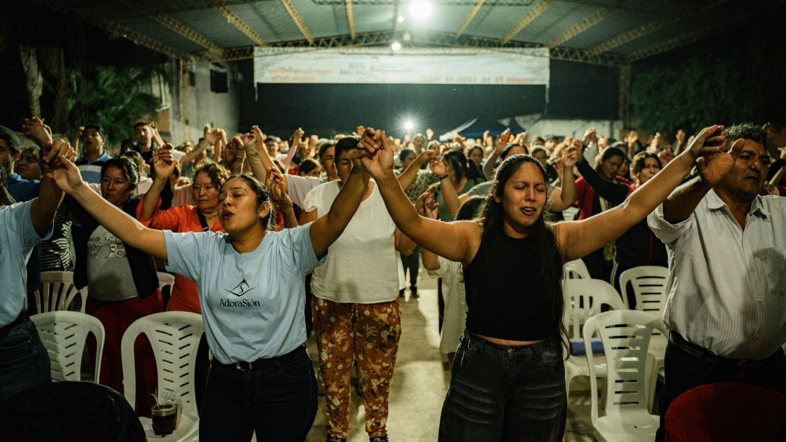
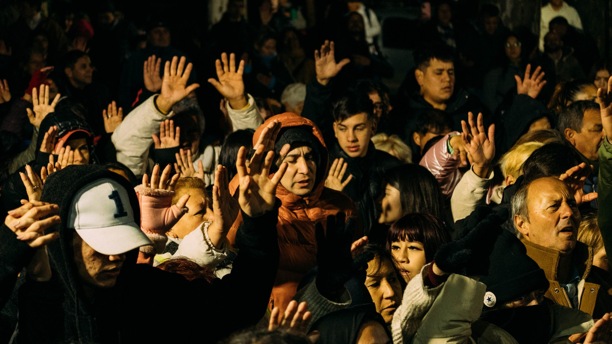
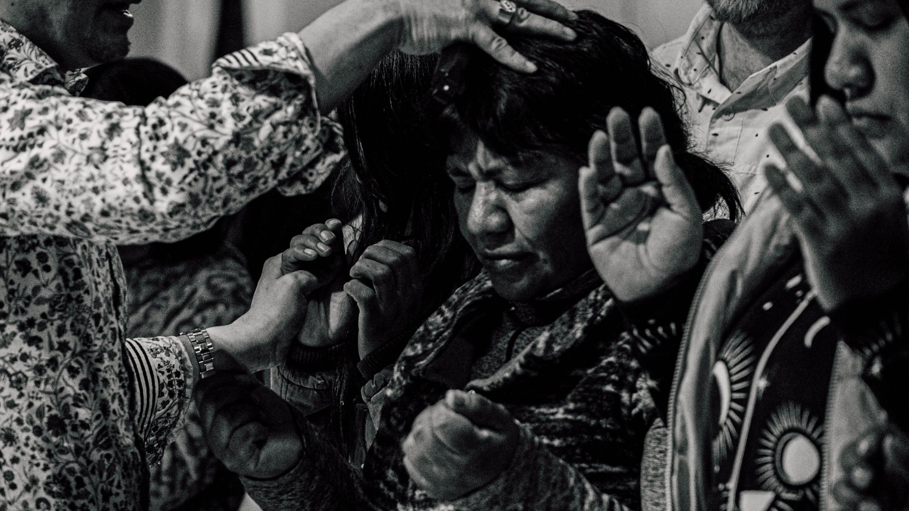
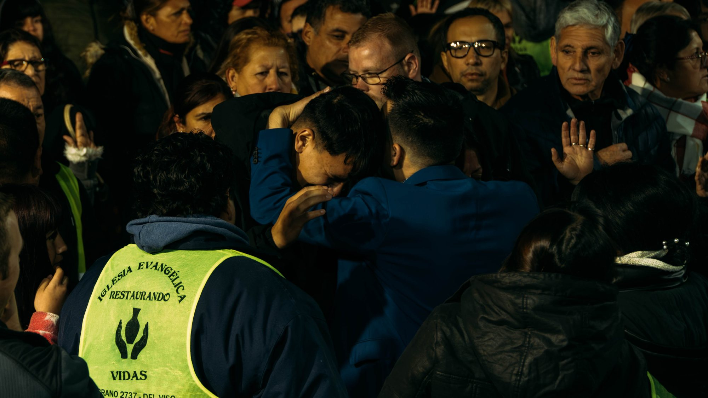

"El Espíritu del Señor está sobre mí, porque me ha ungido para dar buenas nuevas a los pobres."
"The Spirit of the Lord is upon me, because he has anointed me to proclaim good news to the poor."Lucas 4:18
Tu donación sostiene misiones, pastores, huérfanos y comunidades en 3 naciones.
Your donation supports missions, pastors, orphans and communities in 3 nations.
Déjanos tus datos y te llevamos a PayPal. Si prefieres, puedes ir directo.
Leave your details and we will take you to PayPal. If you prefer, you can go straight there.
100% va al campo misionero.
100% goes to the mission field.